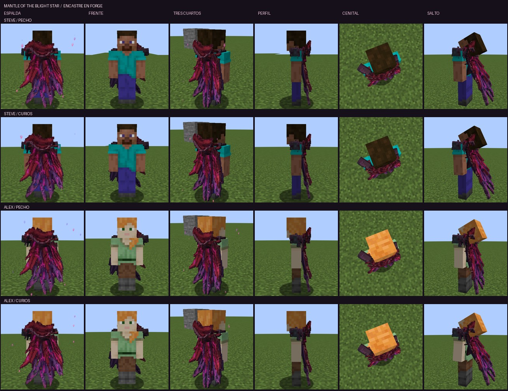

v1.67.20 · Forma original, sólo colocación · En pruebas
Mantle of the Blight Star
El manto conserva la forma, las animaciones y el arte de v1.67.14. Se equipa junto al torso, en pecho o Curios, sin comprimir el cuello ni estirar las placas. Prueba para Minecraft Java 1.20.1 con Forge y GeckoLib.

Capturas reales en Forge. Pruebas y notas · Comparar con v1.67.19.

Ver el dorso junto a la referencia original
En los renders del visor se usa un portador neutro. El pelo y la ropa de la referencia no forman parte de la capa.